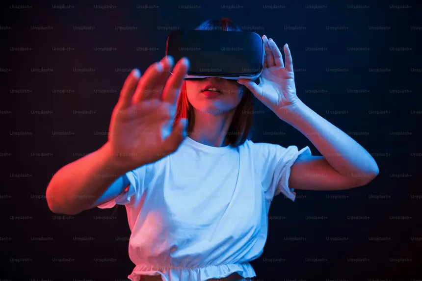
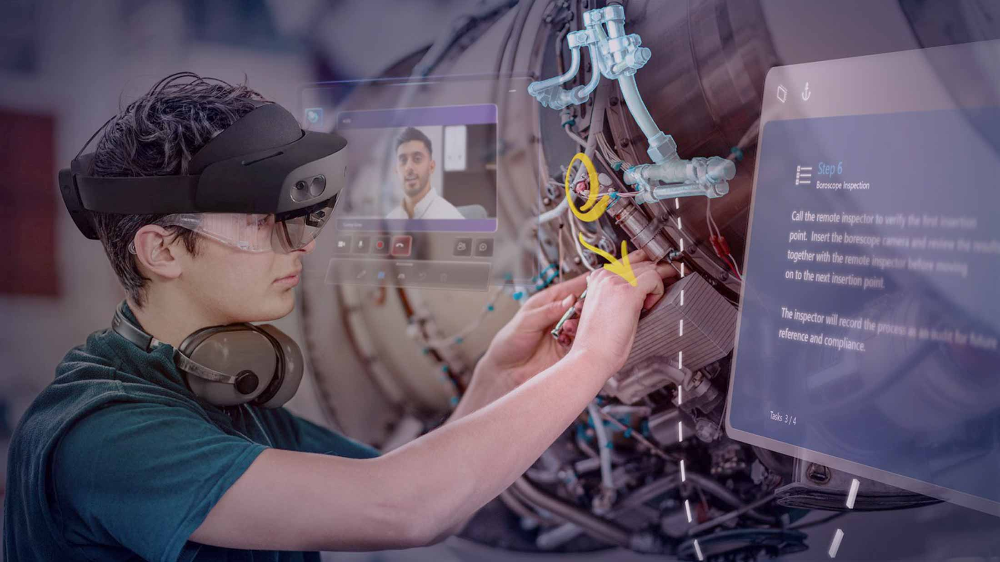

REALIDAD MIXTA

¿Que es la realidad mixta?
En el contexto de la REALIDAD VIRTUAL, la realidad mixta se refiere a la capacidad
de los dispositivos inmersivos(como el Meta Quest 3) de combinar el entorno fisico
del usuario con elementos digitales permitiendo la INTERACCIÓN EN TIEMPO REAL.

¿Existe diferencia?
diferencia de la VR tradicional, que aísla al usuario completamente, la MR
utiliza cámaras y sensores para mapear el espacio físico, integrando objetos
virtuales como si fueran parte del entorno real mediante técnicas como la oclusión dinámica

Características de la Realidad Mixta
A diferencia de la realidad virtual, que te aisla en un entorno 100% digital, o de
la realidad aumentada, que solo añade capas simples sobre lo que ves, la realidad mixta
permite que los elementos virtuales reconozcan tu espacio físico.
- Mapeo espacial: Los visores escanean tu habitación para calcular distancias y paredes.
- Interacción natural: Puedes tocar, mover o rodear hologramas usando tus manos, la mirada o la voz.
- Conexión constante: Nunca pierdes de vista tu entorno real, el cual se amplifica con contenido tridimensional.